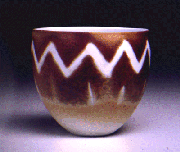
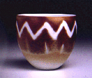

| Watercolors on Porcelain
 atercolors
on Porcelain is a technique developed by the Norwegian ceramic artist
Arne Åse in the late 1980s and a technique that I have been experimenting
and using myself since 1994. This particular technique
can really be dubbed 'unique', as it has very little to do with
traditional glazes to achieve color effects. It also has little
to do with traditional artists watercolors - these are actually
very finely ground pigments, dispersed in water, whereas the Watercolors
on Porcelain use
watersoluble metal salts, such as Cobalt Sulphate, Iron Sulphate,
Copper Sulphate, Potassium Dichromate, Uranyl Nitrate or other metal
sulphates, chlorides or nitrates to achieve the colour effects.
While these metal salts achieve colors of the same category as their
oxide counterparts (eg. cobalt = blue), the effects are quite different. atercolors
on Porcelain is a technique developed by the Norwegian ceramic artist
Arne Åse in the late 1980s and a technique that I have been experimenting
and using myself since 1994. This particular technique
can really be dubbed 'unique', as it has very little to do with
traditional glazes to achieve color effects. It also has little
to do with traditional artists watercolors - these are actually
very finely ground pigments, dispersed in water, whereas the Watercolors
on Porcelain use
watersoluble metal salts, such as Cobalt Sulphate, Iron Sulphate,
Copper Sulphate, Potassium Dichromate, Uranyl Nitrate or other metal
sulphates, chlorides or nitrates to achieve the colour effects.
While these metal salts achieve colors of the same category as their
oxide counterparts (eg. cobalt = blue), the effects are quite different.
As can be seen above, sometimes the metal salts will crystallize
on drying, giving a varied surface. Another interesting effect can
be seen in the use of Uranyl
Nitrate and phosphoric acid. The acid, once applied on top
of a layer of Uranyl Nitrate, depresses the color into the clay
body, revealing the white porcelain underneath. This technique also
generates a 'halo' effect, with the color concentrating on the edges
of the acid. The Watercolors on Porcelain technique can also be
useful for writing calligraphy on tiles, vessels or sculpture.
This is a great technique, but also one to be taken very seriously,
as the metal salts can be extremely hazardous to your health and
precautions need to be taken. If you want to find out more about
this technique, I suggest you get hold of a copy of Arne Åse's book
Watercolors on Porcelain, which has been published in the US - you
may also find it in a good library.
More on Watercolors on Porcelain
More Articles
|
{kind=link}